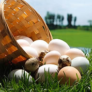
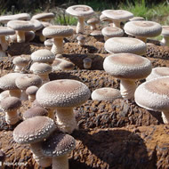
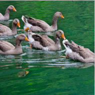
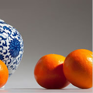
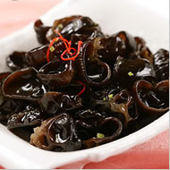
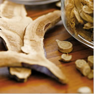
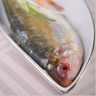

首页
今日订单
呼叫服务
基地视频
配送服务
质量监控
全部分类>>
蔬 菜
禽 蛋
水 产
水 果
肉 类
粮油杂粮
食用菌
中药材
笋 竹
油 茶
查看区域:
莲都区
街道:
岩泉街道
村镇:
长岗背村

龙泉鸭蛋
遂昌高山萝卜

庆云香菇

缙云麻鸭

丽水枰柑

云和黑木耳

龙泉灵芝

大黑鲜鱼
跳转到第
页
下一页
上一页
共125页 当前第1页
主办：丽水市农业局、市工商局、市食品安全委员会、市质量监督管理局
承办：丽水市农业合作社联合会、丽水市天虹农业科技有